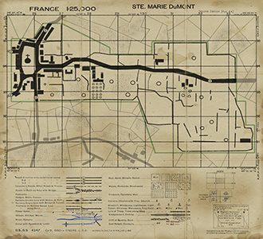

Date: June 6th, 1944
Time: 8:30am
History:
Ste. Marie du Mont is one of the first towns reached during the D-Day invasion on June 6, 1944.
A mixed group of 502nd and 506th paratropers led by Captain Lloyd Patch, 506th 1st Battalion, Hq. Company Commander, was directed to move toward Ste. Marie du Mont from the small hamlet of Holdy where they have wiped out the only ennemy artillery position which had not been plotted by intelligence overlays.
While the 502nd troopers remained to guard the four artillery pieces (105s), Patch's force started penetrating the village. They were rapidly taken under enemy fire and ordered the 502nd's captured guns to fire on Ste. Marie. A round hit the church steeple and caused a group of 506th troopers who had moved in during the night (without anyone knowing), to pile down on them. Unable to budge the Germans, Patch's force continued to fight and waited for the first tanks of the 4th Division to arrive from Utah Beach. By late afternoon on D-Day, Lt. Col. von der Heydte's Fallschirmjägers had pulled out of Ste. Marie du Mont.
Objectives:
Allies: Attack the entrenched artillery position and wipe out all German resistance in that area. From there make your way into Ste. Marie du Mont, securing the road up to the village square and wait for the armored reinforcements to arrive.
Axis: Hold Ste. Marie as long as possible. Use the mortars next to the town square to support your troops.
Designed By: Toni "Ranson" Kreska
Text Source: www.saak.nl